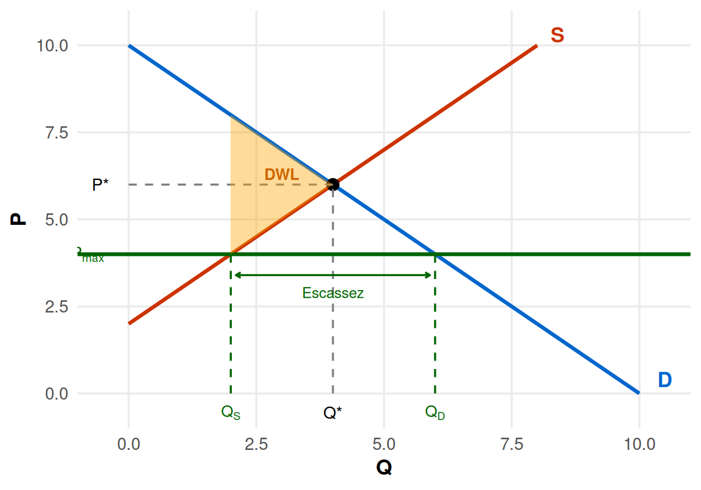
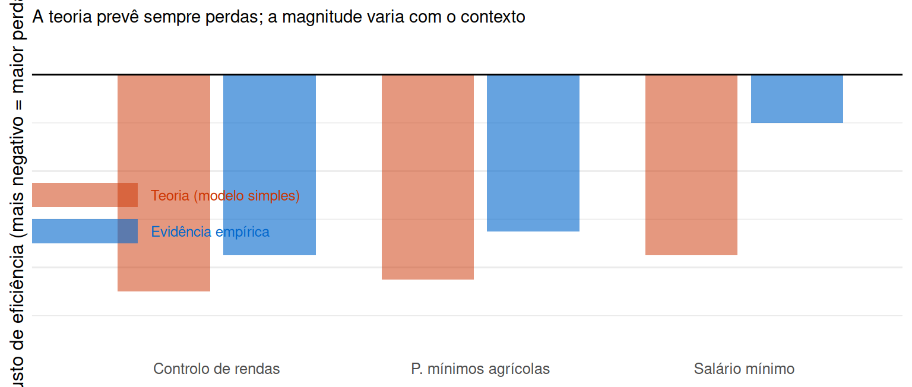

Intervenções nos Mercados: Controlo de Preços
Da teoria à evidência empírica
Enquadramento
O que fizemos até aqui
- Impostos e subsídios são intervenções que actuam sobre o preço de mercado de forma indirecta
- Ambos criam uma perda de excedente total (DWL), cuja incidência depende das elasticidades
Hoje: o Estado fixa directamente o preço — controlo de preços
Definição
Um preço máximo (\(P_{max}\)) impede que o preço suba acima de um tecto fixado pelo Estado. Um preço mínimo (\(P_{min}\)) impede que o preço desça abaixo de um piso. Quando vinculativos, impedem o mercado de atingir o equilíbrio competitivo.
Motivações políticas
Para fixar um preço máximo:
- Proteger consumidores de preços considerados excessivos
- Exemplos: controlo de rendas, tarifas de energia, medicamentos essenciais, alimentos em tempo de guerra
Para fixar um preço mínimo:
- Garantir rendimento suficiente a produtores ou trabalhadores
- Exemplos: preços mínimos agrícolas (PAC), salário mínimo nacional
Important
A economia positiva não diz que estas políticas são “erradas” — analisa as suas consequências. A avaliação normativa depende dos valores da sociedade e dos trade-offs entre eficiência e equidade.
Preço Máximo (\(P_{max}\))
Mecanismo: tecto de preço (no melhor dos casos)

Figure 1
Efeitos do \(P_{max}\): exemplo numérico
Mercado com \(D: P = 10 - Q\) e \(S: P = 2 + Q\), equilíbrio \(Q^* = 4\), \(P^* = 6\)
Tecto \(P_{max} = 4 < P^*\):
| Competitivo | Com \(P_{max} = 4\) | Variação | |
|---|---|---|---|
| Quantidade transaccionada | \(Q^* = 4\) | \(Q_S = 2\) | \(-2\) |
| Excedente do Consumidor | 8 | \(\leq 10\) † | \(\leq\) +2 |
| Excedente do Produtor | 8 | 2 | −6 |
| Excedente Total | 16 | \(\leq 12\) | \(\geq\) −4 |
† máximo teórico — assume racionamento eficiente (bens vão para quem mais valoriza)
Important
O EP cai sempre: o produtor vende menos a preço mais baixo. O EC depende de quem recebe os \(Q_S = 2\) bens racionados: se vão para os consumidores com maior WTP (EC = 10 > 8), há ganho; mas com racionamento não-preço (fila, relações pessoais, discrição do vendedor) os bens podem ir para quem os valoriza menos — o EC real pode ser inferior a 8. A DWL mínima é 4 (triângulo entre curvas de \(Q_S\) a \(Q^*\)) e cresce com ineficiência alocativa.
Consequências não intencionais do \(P_{max}\) (1/2)
Escassez e racionamento não-preço
Quem recebe o bem? Não necessariamente quem mais o valoriza. O racionamento é feito por filas, relações pessoais ou discrição do vendedor — o EC real pode ficar abaixo do valor competitivo.
Degradação da qualidade
Produtores não podem cobrar mais → reduzem custos de manutenção e qualidade para compensar a margem perdida.
Consequências não intencionais do \(P_{max}\) (2/2)
Mercado paralelo (mercado negro)
A disposição a pagar dos consumidores excedentários (\(Q_D - Q_S = 4\)) é muito superior a \(P_{max}\) → surgem trocas informais a preços mais altos, muitas vezes ilegais.
Redução da oferta futura
A menor rentabilidade desincentiva novos investimentos. A longo prazo, a oferta pode contrair ainda mais.
Preço Mínimo (\(P_{min}\))
Mecanismo: piso de preço
Figure 2
Efeitos do \(P_{min}\): exemplo numérico
Mesmo mercado, piso \(P_{min} = 8 > P^* = 6\):
| Competitivo | Com \(P_{min} = 8\) | Variação | |
|---|---|---|---|
| Quantidade transaccionada | \(Q^* = 4\) | \(Q_D = 2\) | \(-2\) |
| Excedente do Consumidor | 8 | 2 | −6 |
| Excedente do Produtor | 8 | \(\leq 10\) † | \(\leq\) +2 |
| Excedente Total | 16 | \(\leq 12\) | \(\geq\) −4 |
† máximo teórico — assume que vendem os \(Q_D = 2\) produtores mais eficientes (menor custo)
Simetria notável
O EC cai sempre: o consumidor compra menos a preço mais alto. O EP depende de quais dos \(Q_S = 6\) produtores conseguem vender os \(Q_D = 2\) bens: se forem os mais eficientes, EP = 10 > 8; se não, EP pode ser inferior a 8. Tal como no \(P_{max}\), o excesso de oferta cria um problema de alocação que agrava as perdas de excedente.
Consequências não intencionais do \(P_{min}\)
Excesso de oferta (stocks acumulados)
\(Q_S = 6 > Q_D = 2\): produtores não escoam toda a produção. Quem vende? Pode não ser o mais eficiente.
Intervenções secundárias para gerir os excedentes
O Estado pode ser obrigado a comprar os excedentes para manter o preço. Custo para o contribuinte.
Exemplo histórico: «montanhas de manteiga» e «lagos de leite» na Política Agrícola Comum europeia dos anos 1980.
Redução de incentivos à eficiência e qualidade
Se o preço mínimo elimina a pressão competitiva por preço, reduz o incentivo a inovar e a melhorar.
Casos Reais
Caso 1: Control de Rendas: SFO
Diamond, McQuade & Qian (2019) — American Economic Review
Estudo quasi-experimental sobre a extensão do controlo de rendas a edifícios com ≤ 4 fogos (construídos antes de 1980), após uma reforma legislativa de 1994 em São Francisco.
Resultados principais:
- Inquilinos em casas controladas: probabilidade de permanecer na morada \(\uparrow\) cerca de 20 p.p.
- Senhorios retiraram 15% das unidades controladas do mercado de arrendamento (conversão em condominiums ou demolição)
- Efeito sobre toda a cidade: rendas no mercado não controlado \(\uparrow\) 5,1%
Important
Exatamente o previsto pela teoria: os inquilinos existentes beneficiam, mas a oferta total cai e as rendas sobem para quem ainda procura no mercado livre.
Caso 2: Berlim (2020–2021)
- Em fevereiro de 2020, Berlim congelou rendas de ~1,5 milhões de apartamentos (construídos antes de 2014, ~95% do parque)
- O mercado bifurcou-se: apartamentos pós-2014 (não regulados, ~5% do parque) sofreram aumentos de preço imediatos
- Hahn, Kholodilin, Waltl & Fongoni (2024): anúncios no segmento não regulado dispararam em preço; inquilinos sem contratos existentes pagaram mais, não menos
- O Tribunal Constitucional Federal alemão declarou o Mietendeckel inconstitucional em abril de 2021
- As rendas voltaram, em geral, aos níveis pré-regulação
Note
Quando a regulação é parcial, os recursos «fogem» para os segmentos não regulados — agravando a situação de quem não beneficiou do controlo.
Caso 3: Catalunha — 2020–2022
- Regulação aplicada a municípios com mais de 20 000 habitantes com mercado de arrendamento «tenso»
- Rendas não podiam exceder um cap por tipo de habitação e zona geográfica
- Terminou em março de 2022 (declarado inconstitucional pelo Tribunal Constitucional espanhol)
Evidência
Evidência (estudos do Banco de España e Fed. San Francisco, 2023):
- Curto prazo: rendas nos segmentos controlados desceram (efeito esperado)
- Número de novos contratos de arrendamento caiu significativamente nos municípios regulados
- Parte da oferta migrou para alojamento turístico (Airbnb) — não sujeito à regulação
Important
Padrão consistente em três países europeus: controlo de rendas redistribui rendimento a curto prazo, mas contrai a oferta a médio prazo.
Caso 4: Salário mínimo — o debate empírico
O salário mínimo é um \(P_{min}\) no mercado de trabalho.
A teoria standard prevê: \(W_{min} > W^* \Rightarrow\) desemprego involuntário (\(L_S > L_D\)).
Mas a evidência empírica é mais complexa:
- Card & Krueger (1994, AER): Aumento do salário mínimo em New Jersey (de $4,25 para $5,05) — sem queda de emprego em fast food vs. Pennsylvania (grupo de controlo); o emprego até aumentou ligeiramente
- Dube, Lester & Reich (2010): usando condados fronteiriços como grupo de controlo, encontram efeitos de emprego próximos de zero para aumentos moderados
- Burkhauser et al. (2022): revisão abrangente — maioria dos estudos encontra efeitos centrados em zero, mas com incerteza considerável
Porquê diverge da teoria simples?
1. Monopsónia no mercado de trabalho
Se os empregadores têm poder de mercado, o salário competitivo já está abaixo do óptimo. Um salário mínimo pode aumentar emprego até certo ponto — tal como um \(P_{min}\) num mercado com poder de monopólio do comprador.
2. Custos de rotatividade (turnover)
Com salário mínimo mais alto, os trabalhadores ficam mais tempo nos empregos → menos custos de recrutamento e formação para as empresas.
3. Efeito nos preços finais
Parte do custo salarial extra é transferida para os consumidores via preços mais altos — o ajustamento não é só via quantidade de emprego.
Note
O debate empírico sobre o salário mínimo foi reconhecido com o Prémio Nobel da Economia de 2021, atribuído a David Card.
Síntese: teoria e evidência

Figure 3
A teoria standard sobre-estima os custos quando há poder de mercado do lado oposto. A evidência confirma os mecanismos, mas não sempre a magnitude.
Discussão
Controlos de preços justificados? (1/2)
A teoria standard conclui que os controlos são ineficientes em mercados perfeitamente competitivos. Mas há casos que alteram a análise:
1. Poder de mercado (monopólio ou monopsónia)
Se o vendedor/comprador já fixa um preço fora do óptimo, um controlo pode melhorar a eficiência.
2. Falhas de informação
Em mercados com assimetria de informação severa, a concorrência de preços pode não funcionar.
Controlos de preços justificados? (2/2)
3. Objectivos distributivos explícitos
Uma sociedade pode preferir aceitar algum DWL para redistribuir de ricos para pobres — decisão normativa, não positiva.
4. Choques transitórios e emergências
Controlos temporários durante crises podem evitar rendas de extracção (price gouging). O custo de eficiência pode ser menor do que os ganhos de estabilidade social.
Referências e leituras recomendadas
Artigos científicos citados
- Diamond, R., McQuade, T. & Qian, F. (2019). “The Effects of Rent Control Expansion on Tenants, Landlords, and Inequality: Evidence from San Francisco.” American Economic Review, 109(9): 3365–3394.
- Card, D. & Krueger, A. (1994). “Minimum Wages and Employment: A Case Study of the Fast-Food Industry in New Jersey and Pennsylvania.” American Economic Review, 84(4): 772–793.
- Kholodilin, K.A. (2024). “Rent Control Effects through the Lens of Empirical Research.” Journal of Housing Economics, 63.
- Hahn, A., Kholodilin, K., Waltl, S. & Fongoni, M. (2024). DIW Berlin Discussion Paper 2094.
Exercícios
Exercício de escolha múltipla 1
O Governo fixa um preço máximo \(P_{max}\) abaixo do preço de equilíbrio \(P^*\). Qual das seguintes afirmações está correcta?
- A quantidade transaccionada aumenta relativamente ao equilíbrio competitivo
- Surge um excesso de oferta no mercado
- O excedente total diminui relativamente ao equilíbrio competitivo
- O excedente do produtor aumenta
Solução — escolha múltipla 1
O Governo fixa um preço máximo \(P_{max}\) abaixo do preço de equilíbrio \(P^*\). Qual das seguintes afirmações está correcta?
- A quantidade transaccionada aumenta ✗ — cai para \(Q_S < Q^*\)
- Surge um excesso de oferta ✗ — surge escassez (\(Q_D > Q_S\))
- C) O excedente total diminui ✓ — há DWL
- O excedente do produtor aumenta ✗ — o EP cai (preço mais baixo, menos quantidade vendida)
Tip
Com \(P_{max} < P^*\), o EP cai sempre. O EC só aumenta se os bens racionados forem para quem mais os valoriza — o que não é garantido. O excedente total é sempre inferior ao equilíbrio competitivo.
Exercício de escolha múltipla 2
Mercado de trabalho: procura \(W = 20 - 2L\), oferta \(W = 4 + L\). Equilíbrio: \(L^* \approx 5{,}3\), \(W^* \approx 9{,}3\). É fixado um salário mínimo \(W_{min} = 14\). Qual o desemprego involuntário?
- 3
- 7
- 10
- 0 — o salário mínimo não tem efeito porque está abaixo de \(W^*\)
Solução — escolha múltipla 2
Com \(W_{min} = 14 > W^* \approx 9{,}3\):
- Procura de trabalho: \(14 = 20 - 2L \Rightarrow L_D = 3\)
- Oferta de trabalho: \(14 = 4 + L \Rightarrow L_S = 10\)
- Desemprego involuntário: \(L_S - L_D = 10 - 3 = \mathbf{7}\)
Tip
O desemprego involuntário é \(L_S - L_D\), não \(L_S\). Os trabalhadores empregados são \(L_D = 3\); os que querem trabalhar mas não encontram emprego são \(L_S - L_D = 7\).
Exercício de desenvolvimento
Mercado de arrendamento: \(D: P = 1000 - 2Q\), \(S: P = 200 + 2Q\) (€/mês; \(Q\) em milhares de fogos).
a) Calcule o equilíbrio competitivo \((Q^*, P^*)\).
b) O Governo fixa \(P_{max} = 400\). Calcule \(Q_S\), \(Q_D\) e a escassez resultante.
c) Calcule o excedente do consumidor, o excedente do produtor e a perda de excedente total (DWL) com o tecto. Confirme que EC + EP + DWL = excedente total competitivo.
d) Com base na evidência empírica (Diamond et al., 2019; Berlim 2020), discuta duas consequências dinâmicas que este modelo estático não captura.
Solução — desenvolvimento (a) e (b)
a) \(1000 - 2Q = 200 + 2Q \Rightarrow Q^* = 200\) mil fogos, \(P^* = 600\) €/mês
b) Com \(P_{max} = 400\):
- \(Q_S\): \(400 = 200 + 2Q \Rightarrow Q_S = 100\) mil fogos
- \(Q_D\): \(400 = 1000 - 2Q \Rightarrow Q_D = 300\) mil fogos
- Escassez: \(300 - 100 = 200\) mil fogos
Solução — desenvolvimento (c)
c) Excedentes com \(P_{max} = 400\), \(Q_S = 100\) (assumindo racionamento eficiente):
| Área | Forma | Cálculo | Valor |
|---|---|---|---|
| EC | trapézio acima \(P_{max}\) sob procura | \(\frac{(1000-400)+(800-400)}{2}\times 100\) | 50 000 |
| EP | triângulo acima oferta sob \(P_{max}\) | \(\frac{(400-200)}{2}\times 100\) | 10 000 |
| DWL | triângulo entre curvas de \(Q_S\) a \(Q^*\) | \(\frac{(800-400)}{2}\times(200-100)\) | 20 000 |
| Total | \(50\,000+10\,000+20\,000\) | 80 000 ✓ |
Warning
EC = 50 000 é o máximo: assume que os \(Q_S = 100\) fogos vão para os 100 arrendatários de maior valorização. Com racionamento não-preço, o EC real pode ser inferior — a DWL efectiva superior a 20 000.
Solução — desenvolvimento (d)
d) Duas consequências dinâmicas não capturadas pelo modelo estático:
(1) Contracção da oferta a médio prazo
Os senhorios convertem habitação em outros usos com maior rendibilidade — alojamento local (Airbnb), escritórios, venda. A oferta de arrendamento regulado encolhe. Diamond et al. (2019) estimam uma redução de 15% no parque de arrendamento em São Francisco após a extensão do controlo de rendas.
(2) Degradação da qualidade
Sem possibilidade de aumentar o preço, os senhorios têm menos incentivo a investir em manutenção e renovação. A qualidade do parque habitacional regulado deteriora-se progressivamente.
Tip
Em ambos os casos, o efeito final é o oposto do pretendido: a médio prazo, quem procura habitação a preço acessível encontra menos oferta e pior qualidade.

Microeconomia — ISCAL-IPL